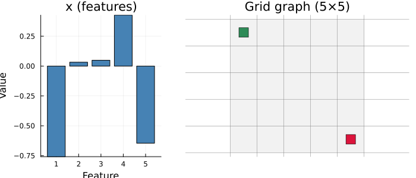
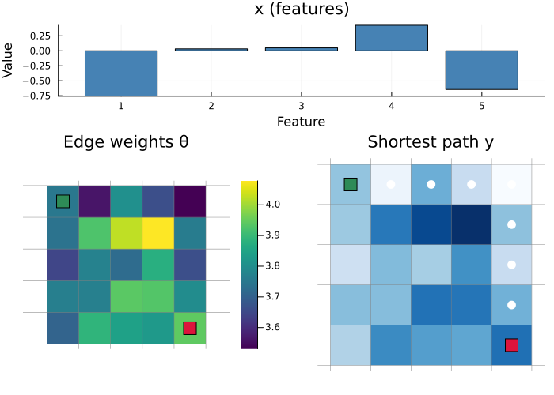
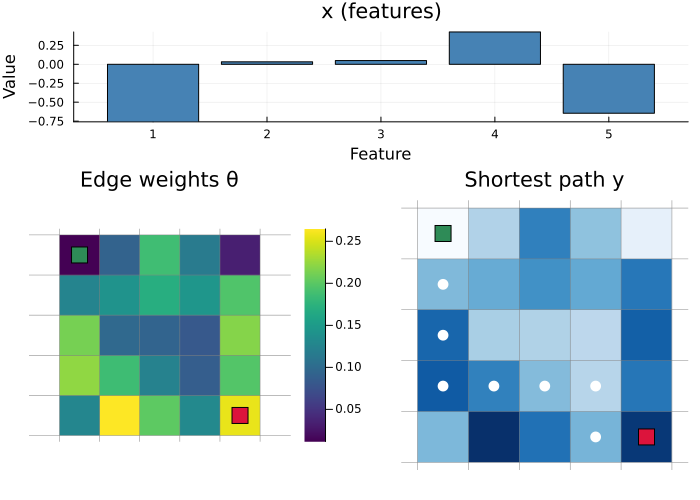

Shortest Path
Find the cheapest path from the top-left to the bottom-right of a grid graph: edge costs are unknown and must be predicted from instance features.
using DecisionFocusedLearningBenchmarks
using Plots
b = FixedSizeShortestPathBenchmark()FixedSizeShortestPathBenchmark(grid_size=(5, 5), p=5, deg=1, ν=0.0)Observable input
At inference time the decision-maker observes the feature vector x and the fixed grid structure (source top-left, sink bottom-right):
dataset = generate_dataset(b, 50; seed=0)
sample = first(dataset)
plot_context(b, sample)
A training sample
Each sample is a labeled triple (x, θ, y):
x: instance feature vector (observable at train and test time)θ: true edge costs (training supervision only, hidden at test time)y: path indicator vector (y[e] = 1if edgeeis on the optimal path)
Top: feature vector x. Bottom left: edge costs θ. Bottom right: optimal path y (white dots):
plot_sample(b, sample)
Untrained policy
A DFL policy chains two components: a statistical model predicting edge costs:
model = generate_statistical_model(b) # linear map: features → predicted edge costsDense(5 => 40) # 240 parametersand a maximizer finding the shortest path given those costs:
maximizer = generate_maximizer(b) # Dijkstra shortest path on the grid graph(::DecisionFocusedLearningBenchmarks.FixedSizeShortestPath.var"#shortest_path_maximizer#10"{DecisionFocusedLearningBenchmarks.FixedSizeShortestPath.var"#shortest_path_maximizer#5#11"{typeof(Graphs.dijkstra_shortest_paths), Vector{Int64}, Vector{Int64}, Int64, Int64, Graphs.SimpleGraphs.SimpleDiGraph{Int64}}}) (generic function with 1 method)A randomly initialized policy predicts arbitrary costs, yielding a near-straight path:
θ_pred = model(sample.x)
y_pred = maximizer(θ_pred)
plot_sample(b, DataSample(sample; θ=θ_pred, y=y_pred))
Optimality gap on the dataset (lower is better):
compute_gap(b, dataset, model, maximizer)0.075932965f0Problem Description
A fixed-size grid shortest path problem. The graph is a directed acyclic grid of size $(\text{rows} \times \text{cols})$, with edges pointing right and downward. Edge costs $\theta \in \mathbb{R}^E$ are unknown; only a feature vector $x \in \mathbb{R}^p$ is observed. The task is to find the minimum-cost path from vertex 1 (top-left) to vertex $V$ (bottom-right):
\[y^* = \mathop{\mathrm{argmax}}\limits_{y \in \mathcal{P}} \; -\theta^\top y\]
where $y \in \{0,1\}^E$ indicates selected edges and $\mathcal{P}$ is the set of valid source-to-sink paths.
Data is generated following the process in Mandi et al., 2023.
Key Parameters
| Parameter | Description | Default |
|---|---|---|
grid_size | Grid dimensions (rows, cols) | (5, 5) |
p | Feature dimension | 5 |
deg | Polynomial degree for cost generation | 1 |
ν | Multiplicative noise level (0 = no noise) | 0.0 |
DFL Policy
\[\xrightarrow[\text{Features}]{x \in \mathbb{R}^p} \fbox{Linear model} \xrightarrow[\text{Predicted costs}]{\theta \in \mathbb{R}^E} \fbox{Dijkstra / Bellman-Ford} \xrightarrow[\text{Path}]{y \in \{0,1\}^E}\]
Model: Chain(Dense(p → E)): predicts one cost per edge.
Maximizer: Dijkstra (default) or Bellman-Ford on negated weights to find the longest (maximum-weight) path.
Mandi et al. (2023), Decision-Focused Learning: Foundations, State of the Art, Benchmark and Future Opportunities. arXiv:2307.13565
This page was generated using Literate.jl.